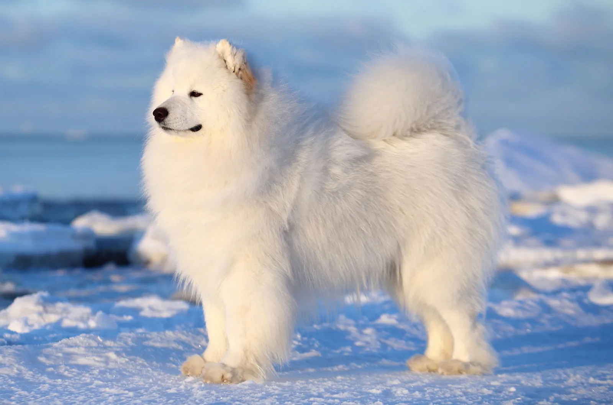
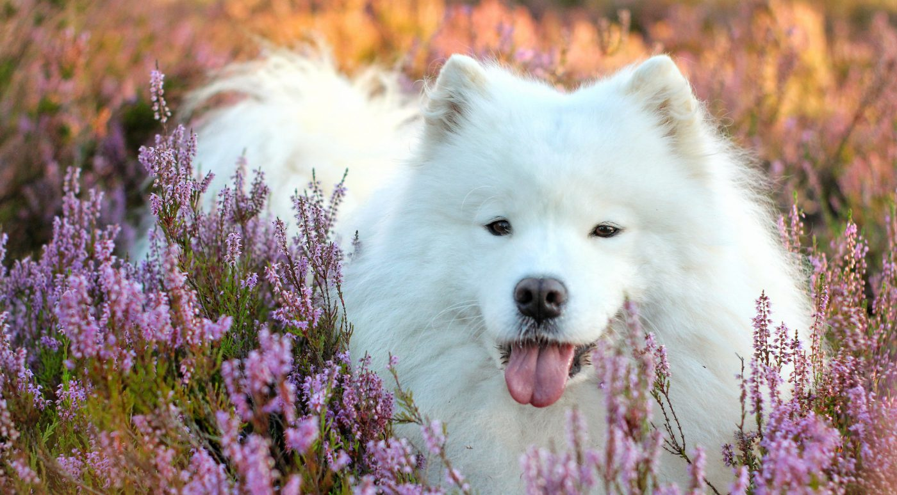
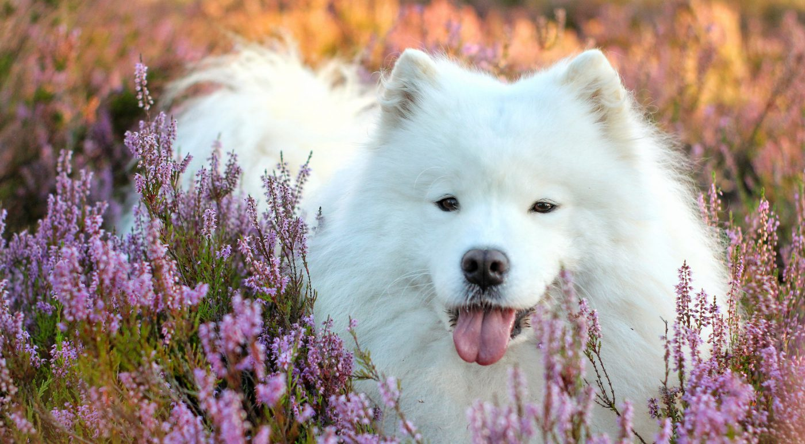
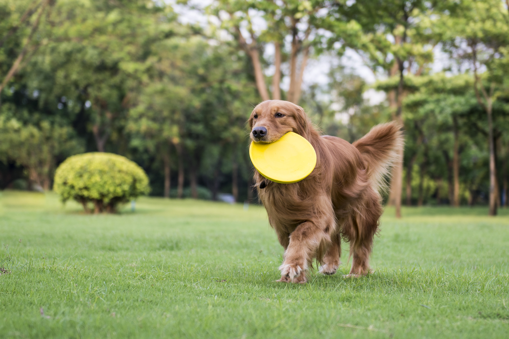

Pets
Bacon Q Dog

Bacon Q. Dog is a 9yr old labradoodle. He prefers to spend his days lounging among the three different beds/couches that his family has gifted him. He enjoys a walk or two around the neighborhood, as long as he can pretend that he doesn't see any of the other animals to avoid the embarrassment of not wanting to admit he has no wolf-like skills in chasing them.
At night just as the rest of the family is ready to relax, Bacon suddenly wants to release all of his energy. He will place his toys on a mini couch and frantically drag the couch around, giving his toys "a ride." There is also a lot of rolling. Lots and lots of rolling.
Photo Gallery


Likes
- Belly rubs
- Playing tug-of-war
- Sneaking onto the couch
Samoyed
The Samoyed is a substantial but graceful dog standing anywhere from 19 to a bit over 23 inches at the shoulder. Powerful, tireless, with a thick all-white coat impervious to cold, Sammies are perfectly beautiful but highly functional. Even their most delightful feature, a perpetual smile, has a practical function: The upturned corners of the mouth keep Sammies from drooling, preventing icicles from forming on the face. A Sammy sentenced to solitary confinement in the yard is a miserable and destructive creature. These are smart, social, mischievous dogs who demand love and attention. Sammies need structure in training. Teach them what's expected of them early, and practice it with them often.
Samoyeds, the smiling sled dogs, were bred for hard work in the world's coldest locales. In the Siberian town of Oymyakon, for instance, temperatures of minus-60 degrees are common. The Sammy's famous white coat is thick enough to protect against such brutal conditions. Powerful, agile, tireless, impervious to cold, Sammies are drop-dead gorgeous but highly functional. Even their most delightful feature, a perpetual smile, has a practical function: The mouth's upturned corners keep Sammies from drooling, preventing icicles from forming on the face.
Photo Gallery
 

Likes
- Belly rubs
- Playing tug-of-war
- Sneaking onto the couch
Buddy, the Golden Retriever

Buddy is a 5-year-old Golden Retriever known for his sunny disposition and fluffy golden coat. He spends his days playing fetch in the park and enjoys swimming whenever he gets the chance. Despite his size, he believes he's a lap dog and loves cuddling with his family.
In the evenings, Buddy shows his playful side by running around the garden, often trying to coax his family into a game of chase. His favorite activity is giving 'high fives' for treats.
Photo Gallery
Likes
- Swimming in the lake
- Chasing his tail
- Cuddles and belly rubs